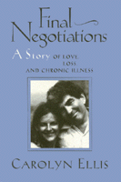

<body bgcolor="#FFFFFF" text="#000000" link="#0000FF" vlink="#CC0000" alink="#CC0000"><center><hr width="350" size="1" align="center" noshade>A poignant memoir about what it means to be involved&#151and in love&#151with someone who is chronically ill<hr width="350" size="1" align="center" noshade><p><a href="https://cdcshoppingcart.uchicago.edu/Cart/ChicagoBook.aspx?ISBN=9781566392709&&PRESS=temple" target="_top">Buy this book!</a> | <a href="https://cdcshoppingcart.uchicago.edu/Cart/Cart.aspx?PRESS=temple" target="_top">View Cart</a> | <a href="https://cdcshoppingcart.uchicago.edu/Cart/Cart.aspx?PRESS=temple" target="_top">Check Out</a></p><p></p></center><!--none//--><h1>Final Negotiations</h1>
<H2>A Story of Love, Loss, and Chronic Illness</H2>
<h3>Carolyn Ellis</h3>
<P>cloth 1-56639-270-5 $90.50, Jan 95, <FONT COLOR=#990033>Available</FONT>
<br>paper 1-56639-271-3 $33.95, Jan 95, <FONT COLOR=#990033>Available</FONT>
<br>Electronic Book 1-43990-498-7 $33.95 <FONT COLOR=#990033>Available</FONT>
<BR> 368 pp
6x9
</P><BLOCKQUOTE><I>"This is a remarkably revealing portrait of a couple dealing with a debilitating chronic illness."</I>
<br>&#151<b><I>Kirkus Reviews</I></b><I></I></BLOCKQUOTE>
<p>When Carolyn Ellis, a graduate student, and Gene Weinstein, her Professor, fell in love, he was experiencing the first stages of emphysema. As he became increasingly disabled and immobile, these two intensely connected partners fought to maintain their love and to live a meaningful life. They learned to negotiate their daily lives in a way that enabled each of them to feel sufficiently autonomous&#151him not always like a patient and her not always like a caretaker. Writing as a sociologist, Ellis protrays their life together as a way to understand the complexities of romance, of living with a progressive illness, and, in the final negotiation and reversal of positions, of coping with the loss of a loved one.
<p>This rare memoir full of often raw details and emotions becomes an intimate conversation about the intricacies of feeling and relating in a relationship. What Ellis calls experimental ethnography is a finely crafted, forthright, and daring story framed by the author's reflections on writing about and analyzing one's own life. Casting off the safe distance of most social science inquiry, she surrenders the private shroud of a complex relationship to bring sociology closer to literature.
<BR>&nbsp;<h2>Excerpt</h2><P>Excerpt available at <a href="http://www.temple.edu/tempress">www.temple.edu/tempress</a></p>
<BR>&nbsp;<h2>Reviews</h2>
<p><i>"In this deeply poignant and personal text Carolyn Ellis offers a brilliant account of how the lingering death of a loved one creates the occasion for radical redefinitions of self. Death is a shared project. Loved ones do not always go gently into the good night. This is a story of death, identity, and love. In this work Ellis gives Gene Weinstein the greatest gift of all, a loving death. In so doing, she shows all of us how to do the same."</i>
<br>&#151<b>Norman K. Denzin</b>, University of Illinois at Urbana-Champaign
<p><i>"</I>Final Negotiations<I> makes a unique contribution to sociology, the helping professions, and to families struggling with chronic illness. There is no other sociology book like it: Carolyn Ellis creates an intimate conversation about lived experience, relating, feeling, and working. She tells us two interrelated narratives&#151the story of her nine-year relationship with a partner who died of emphysema and the story of the writing of </I>Final Negotiations<I>. We are invited into a dialectics of intimacy to experience with her the complexly layered and nuanced emotions around attachment, love, power, jealousy, anger, care-taking, loss, and recovery. In a brilliant and courageous conclusion, we see how writing with passion about the Self, connecting sociology with literature, breaking genre boundaries are acts of recovery, release, and love. The reader will be treated to a most original, nervy, and memorable book."</i>
<br>&#151<b>Laurel Richardson</b>, Ohio State University
<BR>&nbsp;<h2>Contents</h2><P>
<p>Acknowledgments
<br>1. Beginning
<br>2. Negotiating Attachment
<br>3. Negotiating Stability and Change
<br>4. Negotiating Loss
<br>5. Negotiating the Story
<br>6. Endings
<br>References
<br>Index
</P><BR>&nbsp;<H2>About the Author(s)</H2>
<table><tr><td valign="top"><img src="/tempress/authors/1164_au.gif" height="90" width="75"></td><td width="100%" valign="middle"><p><B>Carolyn Ellis</B> is Professor of Sociology at the University of South Florida, Director of the Institute for Interpretive Human Studies, and author of several books, including <I>Investigating Subjectivity: Research on Lived Experience</I> (co-edited with Michael Flaherty).</P></td></tr></table>
<BR><H2>Subject Categories</H2>
<p><A HREF="/tempress/biography.html" TARGET="_top">Biography/Memoir/Autobiography</a>
<BR><A HREF="/tempress/sociology.html" TARGET="_top">Sociology</a>
<BR><A HREF="/tempress/disability.html" TARGET="_top">Disability Studies</a>
</p>
<BR><h2 class="inpageheading">In the series</H2>
<P><I><a href="http://www.temple.edu/tempress/health_society.html" onMouseOver="window.status='Click for other books in this series!'; return true;" onMouseOut="window.status=''; return true;" target="_top">Health, Society, and Policy</a></i>, edited by Sheryl Ruzek and Irving Kenneth Zola.
</p><p>No longer active.<p><i>Health, Society and Policy</i>, edited by Sheryl Ruzek and Irving Kenneth Zola, takes a critical stance with regard to health policy and medical practice, ranging broadly in subject matter. Backlist titles include books on the legal and professional status of midwifery, the experience and regulation of kidney transplants, the evolution of federal law on architectural access, and a political/ethical argument for making the community responsible for universal access to health care.</p>
<p align="center"><a href="https://cdcshoppingcart.uchicago.edu/Cart/ChicagoBook.aspx?ISBN=9781566392709&&PRESS=temple" target="_top">Buy this book!</a> | <a href="https://cdcshoppingcart.uchicago.edu/Cart/Cart.aspx?PRESS=temple" target="_top">View Cart</a> | <a href="https://cdcshoppingcart.uchicago.edu/Cart/Cart.aspx?PRESS=temple" target="_top">Check Out</a></p><p><font face="Arial" size="1"><a href="copyright.html" onMouseOver="window.status='Web Copyright Policy';return true;" onMouseOut="window.status=''" title="Web Copyright Policy">&copy;</a> 2015 <a href="http://www.temple.edu" target="new" onMouseOver="window.status='Link to Temple University home page';return true;" onMouseOut="window.status=''" title="Link to Temple University home page">Temple University</a>. All Rights Reserved. http://www.temple.edu/tempress/titles/1164_reg.html</font></p>